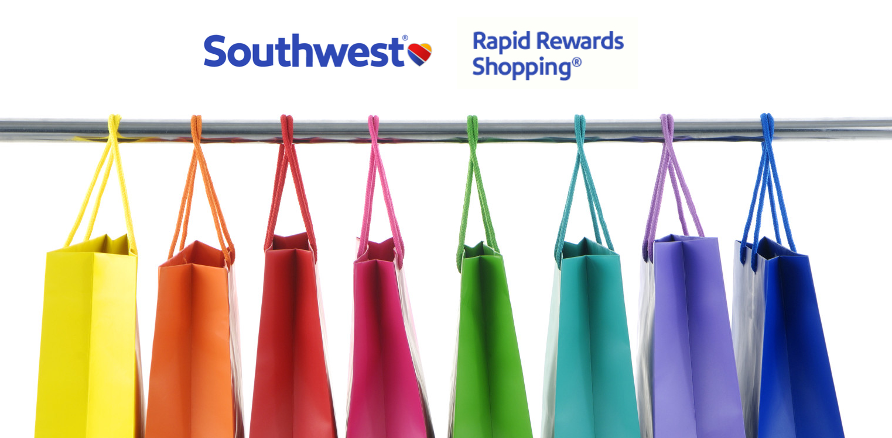

From frequent to friends and family flyers
Maybe better that Frequent flyer program


The network effect is a feature that every business model attempts to have. Because we know for sure that with the network effect a business model will have explosive growth if it succeeds at implementing this feature or embed it natively as the telephone does. The telephone is better if others have it and use it. Businesses of the internet era have hugely benefited from this effect that makes you use an app because of your friend.
Of course, the network effect is more achievable with internet things because the internet itself is a network that benefited from this effect to spread around the world and is a fluid medium for this effect to be applied.
However, with physical products and services, it is more difficult to see the network effect apply unless that the product or service be very well designed and branded such that everyone who sees one using it is tempted and eager to do the same. Some products and services mainly from the luxury industry have succeeded at this by leveraging the power of status and the intrinsic nature of people to compare and position themselves with their peers. When my colleague, chief of technology, related to me her past travel experience in First class business of this all-business airline, I went to say to my assistant to reserve this flight experience rather than the one she reversed last time because I am the Chief of marketing and because the CTO is my friend and colleague and she has better taste than me or just she has the same hierarchical level and status. Of course, my demand can be not intrinsically related to the performance of the business but we humans are often wired like that. This kind of network effect is good to have for an airline but it is really a weak network effect compared to the one that made Facebook or LinkedIn get millions of users in a short time frame.
Turning the customers or users into members of the sales and marketing team in charge of introducing the product or services to others is what businesses that are willing to grow fast seek. it happens that internet-based businesses have more levers for implementing such kind of feature because it is easier to click on a share button but if we think hard we can see that some physical products and services can also implement it.
For example what if I could share this code one my last fare with my wife(I am single and not married), my friend, sister, brother, or anyone I want, and what if she or he can use it to book a discounted flight to California or Seattle or the destination of choice. What if it is not only one code that she or he could use but many, one from me, another from his other friend, and another from a colleague. It is very likely that such kind of system if well designed and implemented could allow an airline to benefit from the network effect and gain more passengers like how the frequent flyers system helps them get more frequency of travel.
This friends and family flyer is a tech-enabled service that both Comprehensive Network carriers and Low-Cost Carriers could try to implement if they don't actually and it is one of the many tech-enabled services and products that I got by being
and by loving mathematics and business administration.